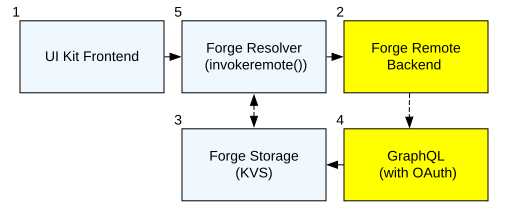
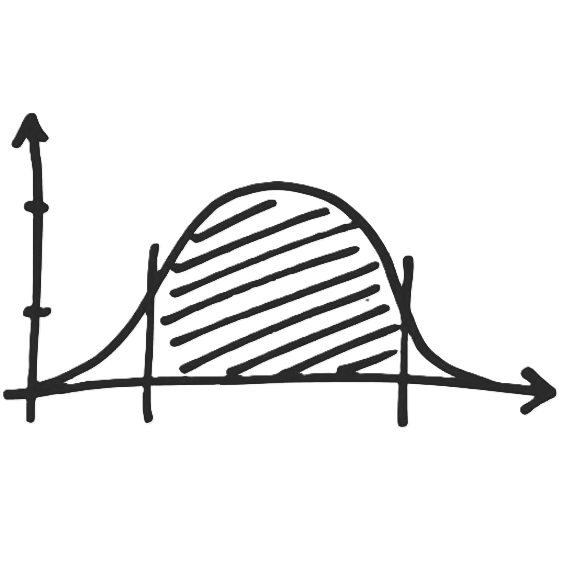

“Safely Scaling” Human-AI Collaboration w/ Atlassian…
AI Traceability in Atlassian’s Eco-System @ 22nd April 2026
Disclaimer @ 22nd April 2026
Views and opinions expressed in this presentation are solely my own and do not necessarily reflect the official positions, strategies, or views of any organisation I represent. While every effort has been made to ensure that principles presented here are well-considered to move forward constructively with embedded A.I., they may be superseded or invalidated by features, changes, or developments introduced in future Atlassian releases.
git commit -m ‘FT-12 #time 4h 30m #comment UI Updated.’
BUT, DO YOU Know Jira’s Face like this…?
WHAT… is the point of all this?
| Control | Evidence | Intervene | |
|---|---|---|---|
| Admin | ✅ Rovo access | ✅ Rovo Insights | ❌ |
| Audit | - | ✅ ALQL = ‘activity ~“Rovo”’ | - |
| Insights | - | ✅ Analytics | ❌ |
| Studio | ✅ Rovo Agent Permissions | ❌ | ❌ |
| Forge | - | ✅ Developer Console | ✅ / ❌ |
| Extension (*.vsix) | ✅ Rovo Dev Settings | ✅ Logs | ✅ / ❌ |

🤷🏻♂️ 🤷🏻♂️ 🤷🏻♂️ 🤷🏻♂️ 🤷🏻♂️ ?
Solution shown is sub-optimal at-scale, consider a dedicated SRE tool.
Some AI solutions make token consumption a 1st class citizen.

{kind=link}
{kind=link}
{kind=link}
{kind=link}
{kind=link}
{kind=link}
{kind=link}
{kind=link}